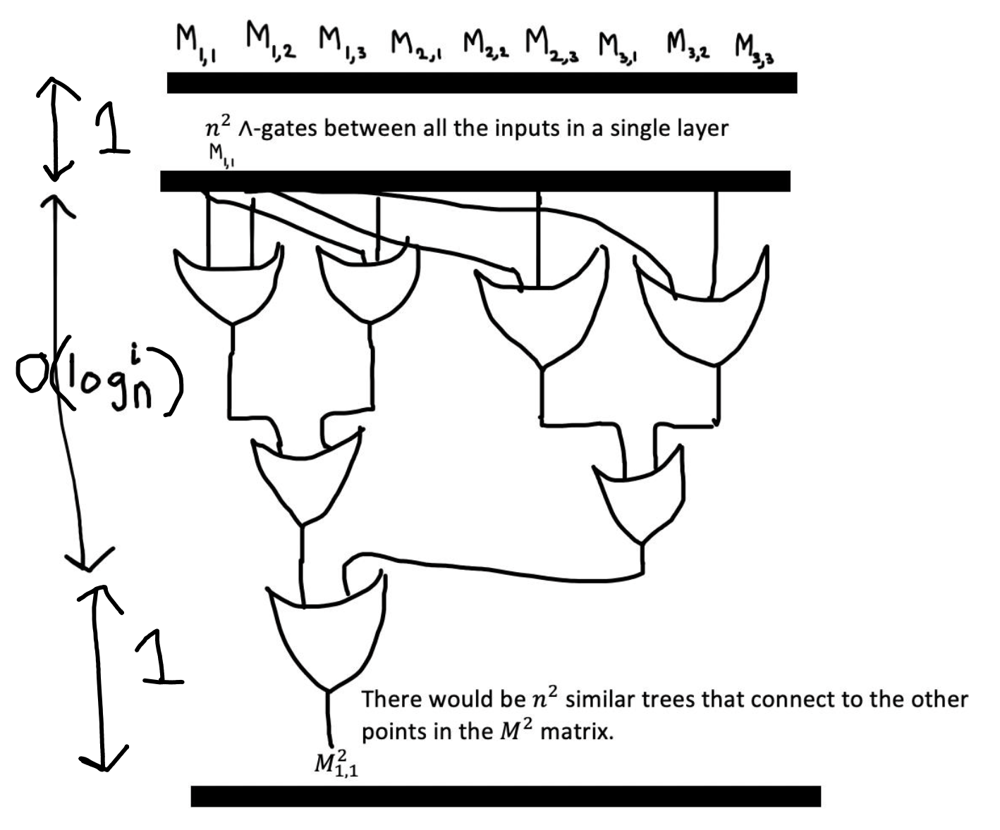

Relations on NL (non-deterministic log-space) through Undirected ST-connectivity
$$\DeclareMathOperator*{\EE}{\mathbb{E}}$$
Hi everyone! I'm writing this post to illuminate some nice relations between some parallel complexity classes - particularly, my goal is to say something about the complexity classes that involve circuits.
\(\mathrm{L}\), or log space, consists of all the problems that are solvable with a Turing Machine that has a read-only input tape and a read-write work tape of size \(O(\log n)\), where \(n\) is the length of the input to the Turing Machine. For “decisions,” the machine needs no output tape, but when used for reductions, we equip the Turing Machine also with a write-only output tape, and we then call the Turing Machine a log-space transducer.
\(\mathrm{NL}\), or nondeterministic log-space, consists of all problems that are solvable by a nondeterministic Turing Machine with a read-only tape and a read-write work tape of size \(O(\log n)\), where \(n\) is the length of its input. One example of a problem that is complete for \(\mathrm{NL}\) (with respect to log-space reductions) is s-t connectivity in a digraph.
\(\mathrm{NC}_i\), or Nick's class, consists of all problems that are deterministically solvable by \(\mathrm{poly}(n)\) processors in \(\log^i n\) time. This is the equivalent to the set of all problems solvable by \(\mathrm{poly}(n)\)-size, \(\log^i n\)-depth circuits, where the circuits are log-space uniform. That is, there must be a log-space transducer which on input string \(1^n\) presented on the read-only tape, outputs on the write-only tape the circuit in full. Then:
$$\mathrm{NC} = \bigcup_{i\in\mathbb{N}} \mathrm{NC}_i$$
The first thing I'm going to do is to show that \(\mathrm{NC}_i\subseteq \mathrm{L}_i\) for all \(i\): For this, the onus of the proof would be to show that the class of languages decidable by uniform boolean circuits with depth \(O(\log^i n)\) is also decidable by a deterministic turing machine that uses atmost \(O(\log^i n)\)-space. To do so, we need to show that a boolean formula that corresponds to a boolean circuit can be extracted using a logarithmic amount of space, and that it can be evaluated in space that is logarithmic in the number of nodes. To do this, I'm going to state the following 2 lemmas, which I'll explain and show subsequently:
Lemma 1: There is a procedure \(R\) that extracts a boolean formula \(\phi\) from a circuit with depth \(O(\log^i n)\) using \(O(\log^i n)\) space.
Lemma 2: There exists a procedure \(S\) that evaluates a boolean formula \(\phi\) in \(O(\log n)\) where \(n\) is the number of nodes in the boolean formula.
We do not need to memorize entire branches (since we are just writing the formula), so we utilize a modified depth-first search algorithm (starting at the root) which only memorizes the current node (this storage space is continuously written over) and the instruction which specifies whether the ‘read-head’ should move to the left branch or right branch:
If the procedure is at an AND gate: It adds a \(\wedge\) to the boolean formula and traverses the left and then the right branches respectively, while adding the corresponding expressions respectively in either position of the \(\wedge\).
If the procedure is at an OR gate: It adds a \(\vee\) to the boolean formula and traverses the left and then the right branches respectively in either position of the \(\vee\).
If the procedure is at a NOT gate: It adds a \(\neg\) to the boolean formula and traverses to its child.
Therefore, since each level of the tree requires \(1\) bit of space (whether the “read-head” should move left or right, which can be encoded as \(0, 1\) respectively), the total space complexity for this procedure is \(O(\#\text{depth}) = O(\log^i n)\). Note here that the total size of the boolean formula would then be \(2^{O(\log^i n)}\).
Therefore, this procedure extracts a boolean formula \(\phi\) from a circuit with depth \(O(\log^i n)\) using \(O(\log^i n)\) space.
Using the formula value method, we can perform a recursive traversal through the tree such that the algorithm only needs to remember at a given time whether its current level is true or false at a given time by storing the current node and the previous result (true or false) from either its children or sibling node:
If it is a leaf (input): Set the previous value to the literal encoded in the leaf.
If the current node is \(\neg\): If the previous value is true, set to false. If the previous value is false, set it to true.
If the current node is \(\vee\): Go down the left branch. If the previous value is false, then go down the right branch (and overwrite the contents of the storage used to compute the left branch with what is needed to compute the right branch). If it is true, then do not go down the right branch and assign true to the value of the node.
If the right branch returns true, assign true to the value of the node. If the right branch returns false, assign false to the value of the node.
If the current node is \(\wedge\): Go down the left branch. If the previous value is false, then do not go down the right branch and assign false to the value of the node. If it is true, then go down the right branch (making sure to overwrite the contents of the storage used to compute the left branch with what is needed to compute the right branch) and simply return whatever the right branch returns: if the right branch returns true, return true. If it returns false, return false.
Since this procedure does not need to remember both branches at the same time, it runs in logspace. Therefore, there exists a procedure \(S\) that evaluates a boolean formula \(\phi\) in \(O(\log n)\) space.
Therefore, given an arbitrary language \(T \in \mathrm{NC}_i\), we can apply procedures \(A\) and \(B\) respectively to correctly obtain:
$$x = R(S(T)) = \{\mathrm{True}, \mathrm{False}\}$$
Since \(S\) runs in \(O(\log^i n)\) space to produce a boolean formula \(\phi\) of size \(2^{O(\log^i n)}\), the total amount of space \(T\) would need would be \(\log 2^{O(\log^i n)} = O(\log^i n)\). Therefore, the total amount of space needed to decide any language in \(\mathrm{NC}_i\) would be
$$2 \cdot O(\log^i n) \in O(\log^i n) \in L_i$$
So, we conclude that \(\mathrm{NC}_i \subseteq\mathrm{L}_i\). This is a nice result since it says that every circuit with a logarithmic depth is solvable by a Turing Machine that uses the same level of logarithmic depth.
The second thing I'm going to do is to show that for all \(i\), \(\mathrm{NL}_i\) has \(O(\log^{2i} n)\) depth, fan-in 2, Boolean circuits. To do this, I'm going to show these two lemmas involving \(\mathrm{UST}\text{-}\mathrm{CON}\) (which is an \(\mathrm{NL}_i\)-complete problem), which I'll explain and prove subsequently:
Lemma 1: \(\mathrm{UST}\text{-}\mathrm{CON}\) (s-t connectivity of a graph \(G\)) can be determined by repeated squaring of its adjacency
matrix.
Lemma 2: There exists a fan-in-2 circuit \(C\) that computes the square of a matrix of size \(n^2\) using space \(O(\log^i n)\).
\(\mathrm{ST}\text{-}\mathrm{CON}\) (or st-connectivity) is the problem instance given by \((G, s, t)\), where the instance is true if there is a path (a sequence of edges) from \(s\) to \(t\) in the graph \(G\), and false otherwise. The \(\mathrm{ST}\text{-}\mathrm{CON}\) problem is a generalized graph problem. For this problem, we're going to be more specific and limit our study to graphs with undirected edges. This undirected graph st-connectivity problem is called \(\mathrm{UST}\text{-}\mathrm{CON}\). \(\mathrm{ST}\text{-}\mathrm{CON}\) (and, by extension, \(\mathrm{UST}\text{-}\mathrm{CON}\)) is a classical example of an \(\mathrm{NL}_i\)-complete language. So, if we want to say something about \(\mathrm{NL}_i\), it would be much easier to show it for \(\mathrm{UST}\text{-}\mathrm{CON}\), since it is an actual problem - and better, it's a graph problem - so we can use our existing knowledge from graph theory, combinatorics, and algebra!
Let \(G=(V,E)\) with \(|V|=n\). If our goal is to determine vertex-connectivity between vertices \(s\) and \(t\), we can do the following to determine st-connectivity. First convert graph \(G\) to its adjacency matrix \(M\), and set the diagonal entries of \(M\) to \(1\). This means that, for all \(1\leq i\leq n, M_{i,i}=1\). We can then repeatedly square \(M\), an \(n\) number of times - this is the same as \(M^{2^n}\). So, for \(1\leq i\leq n\), there is a path of length \(i\) in graph \(G\) from \(s\) to \(t\) if and only if \(M^{2^i}_{s,t}\geq 1\).
We know this to be true since in matrix multiplication:
$$ M^{2}_{i,j} = \sum_{k=1}^n M_{i,k} M_{k,j}$$
Therefore, \(M^{2}_{i,j}\) can only be \(1\) if and only if for some \(k\) between \(1\) and \(n\), \(M_{i,k}\) and \(M_{k,j}\) are both \(1\). This would mean that there is a path \(i\to k\) and a path \(k\to j\), which implies a path \(i\to j\) of length \(2\). Repeating this similarly \(n\) times and checking the coordinate \(i, j\) would tell us if there is a path of any length between \(i\) and \(j\) in the graph \(G\).
Therefore, the st-connectivity of a graph \(G\) can be determined by the repeated squaring of its adjacency matrix.
Therefore, we first create a circuit to compute the square of an arbitrary matrix \(M\) of size \(n^2\) or specifically \(n\times n\). Let the enumerated \(n^2\) inputs to the circuit be each enumerated element in the matrix (starting from the first row, first column and traversing all the elements in the same row before moving down a column). Then, since:
$$ A_{i,j} = \sum_{k=1}^n M_{i,k}M_{k,j} $$
We can reconstruct this using boolean gates such that:
$$ A_{i,j} = \bigvee_{k=1}^n (M_{i,k} \wedge M_{k,j}) $$
(Note here that this warrants the use of multiple ∨, ∧ gates since \(1\leq k\leq n\). In particular, there would be \(n\) \(\mathrm{AND}\) (\(\wedge\)) gates between every single input which would take up a layer of \(O(1)\)-depth though the number of gates themselves would be \(n^2\). Then, since every gate has to be fan-in 2, we would need to create a ‘descending convergent tree’ of \(\mathrm{OR}\) \((\vee)\) gates which converges to the last layer that would only have a single \(\mathrm{OR}\) (\(\vee\)) gate, the output of which would be \(A_{i,j} = \bigvee_{k=1}^n (M_{i,k}\wedge M_{k,j})\). Evidently, the depth of this layer would be \(\log_2^i n\). Diagrammatically for a \(n = 3\) matrix, this would be:

Therefore, we have that the depth of the circuit that squares a matrix \(M\) would be:
$$\begin{align*}
d &= d_{\vee \text{ trees}} + d_{\wedge \text{ layer}} \\
&= (\log(|A|) + 1) + 1
\end{align*}$$
The additional +1 in the \(d_{\vee \text{ trees}}\) emerges from its final output gate. Simplifying this further, we get:
$$
\begin{align*}
d &= \log(|A|) + 2 \in O(\log |A|) = O(\log^i n)
\end{align*}
$$
Therefore, we conclude that there exists a fan-in-2 circuit \(C\) that computes the square of an \(n\times n\) matrix using space \(O(\log^i n)\).
We now note that any machine that runs in \(\mathrm{NSPACE}\) of \(O(\log^i n)\) when deciding an instance \(x\) has a configuration graph \(G\) with \(2^{O(\log^i n)}\) nodes. We can then use lemma 1 to solve the \(\mathrm{ST} \text{-}\mathrm{CON}\) problem for \(G\) between the nodes \(s\) and \(t\), where we set \(s\) to be the start node and \(t\) to be the ACCEPT node.
Therefore, the onus of the proof would be to show that there is a fan-in-2 circuit of depth \(O(\log^{2i}n)\) which can perform the repeated squaring described in lemma 1. In particular, it would need to compute \(M^{2^{O(\log^i n)}}\)
where \(n=|V|,m=|E|\) for graph \(G=(V,E)\), or square \(M\) an \(O(\log^i n)\) number of times.
However, we can just stack \(O(\log^i n)\) copies of the circuit \(C\) (the output of each circuit is the input to the next one) described in lemma \(2\) such that
$$M^{2^{O(\log^i n)}} = C'(M), \text{ where } C' = C(C(\cdots C(M)))$$
where each circuit \(C\) just squares the matrix input. Therefore, the depth of the circuit \(C'\) would be:
$$
\begin{align*}
d_{C'} &= d_C \times (\# \text{ circuits } C \text{ in the } C' \text{ stack}) \\
&= O(\log^i n) \times O(\log^i n) \\
&\in O(\log^{2i} n)
\end{align*}
$$
From this, it takes an \(O(1)\)-layer to verify that \(M_{s,t}^{2^{O(\log^i n)}}=1\). Therefore, the total depth of the fan-in-2 circuit that can decide instances of the language \(\mathrm{L}\) in \(\mathrm{NL}_i\) is \(O(\log^{2i} n) + 1 = O(\log^{2i} n)\).
So, we conclude that for all \(i\), \(\mathrm{NL}_i\) has \(O(\log^{2i} n)\) depth, fan-in 2, Boolean circuits.
The final thing I'm going to do here is to say (and, perhaps, restate) how everything we've done so far relates to these large parallel complexity classes. To do this, I'm going to introduce another complexity class, \(\mathrm{RNC}\) and \(\mathrm{RP}\).
\(\mathrm{RNC}_i\) is identical to \(\mathrm{NC}_i\) with the exception that the processors (or the gates of the circuit) can now use random bits. Similarly to \(\mathrm{NC}\), we can write that:
$$\mathrm{RNC} = \bigcup_{i\in\mathbb{N}}\mathrm{RNC}_i$$
\(\mathrm{RP}\) is a larger randomized class, which describes the set of all problems that can be solved by a probabilistic Turing Machine in randomized polynomial time, such that it always correctly detects “no” instances with probability \(1\) but only detects “yes” instances with probability atleast \(0.5\). Then, something to observe (using our prior results) is that:
$$\mathrm{NC}_1 \subseteq \mathrm{L}_1 \subseteq \mathrm{NL}_1 \subseteq \mathrm{NC}_2\subseteq \cdots \subseteq \mathrm{NC} \subseteq \mathrm{RNC} \subseteq \mathrm{RP}$$
It is tempting to try to show that for all \(i\), \(\mathrm{NL}_i \subseteq \mathrm{NC_{2i}\) (since this holds for \(i = 1\)). Indeed, this would solve a a major open problem: \(\mathrm{L}\neq\mathrm{P}\).
To show this, we note the following points:
1) By definition (since every deterministic Turing Machine can be considered as a nondeterministic Turing
Machine with only one computation path), we know that \(\mathrm{L}_i \subseteq \mathrm{NL}_i\).
2) Next, \(\mathrm{NC}_i \subseteq \mathrm{P}\) since circuits that encode languages which run in \(O(\log^i n)\) nondeterministic time can also be solved in polynomial deterministic time as \(2^{O(\log^i n)} \in O(n^i) = \mathrm{P}\).
3) Finally, \(\mathrm{L}_1 \nsubseteq \mathrm{L}_i\) for all \(i>1\) due to the space hierarchy theorem which states that:
$$ \mathrm{SPACE}(f(n)) \nsubseteq \mathrm{SPACE}(f(n)\log f(n)) \implies \mathrm{SPACE}(\log n)\nsubseteq \mathrm{SPACE}(\log^2 n)$$
Therefore, in the context of this, if \(\mathrm{NL}_i \subseteq \mathrm{NC}_{2i}\), we would have (combining point 1 and 2) that:
$$\mathrm{L}_i \subseteq \mathrm{NL}_i \subseteq \mathrm{NC}_{2i} \subseteq \mathrm{P}$$
However, (by point 3), \(\mathrm{L}_1 \nsubseteq \mathrm{L}_i\), for all \(i\). Therefore,
$$ \mathrm{L} \nsubseteq \mathrm{L}_i \subseteq \mathrm{NL}_i \subseteq \mathrm{NC}_{2i} \subseteq \mathrm{P}$$
Since \(\mathrm{L}\) is strictly contained in \(\mathrm{L}_i\) which is, in turn, contained in \(\mathrm{P}\), we have that \(\mathrm{L}\nsubseteq \mathrm{P}\) and therefore, \(\mathrm{P}\nsubseteq\mathrm{L}\). By definition, \(\mathrm{L} = \mathrm{P}\) if and only if \(\mathrm{L} \subseteq \mathrm{P}\) and \(\mathrm{P}\subseteq\mathrm{L}\) were to hold true. However, neither of these statements would hold if the above conditions were true.
Therefore, we can conclude that \(\mathrm{NL}_i \subseteq \mathrm{NC}_{2i}\) for all \(i\) would imply that \(\mathrm{L} \neq \mathrm{P}\): that the set of all problems solvable in polynomial time by a deterministic Turing Machine is not exactly the set of problems solvable in logarithmic space by a deterministic Turing Machine.